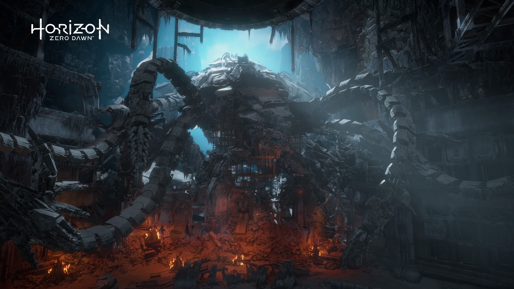
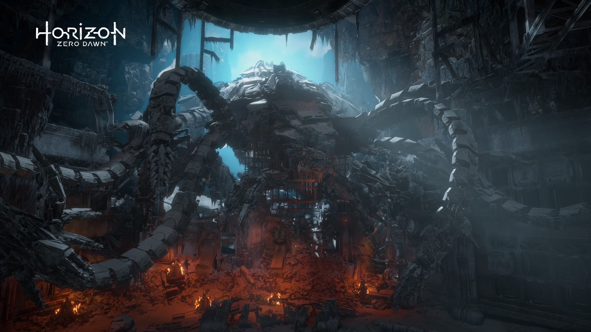

Here is our source of inspiration: Horizon Zero Dawn and its successor, Horizon Forbidden West.
Long ago, Ted Faro created new machines called "Peacekeepers," tank-class machines capable of fueling themselves with biomass.

 

These machines became uncontrollable and began consuming all matter on Earth, with no way to deactivate them remotely.
It was then that Elisabeth Sobeck conceived the "Zero Dawn" project, a program aimed at recreating humanity after its inevitable extinction.

This project is based on a symbiosis of artificial intelligences led by GAIA.
But Ted Faro deleted the APOLLO AI, which was supposed to transmit past knowledge to new generations, to preserve his reputation.
We are in the 3000s; after a major malfunction of the AI symbiosis, GAIA disappeared after attempting to stop HADES, an AI responsible for resetting the planet.

HEPHAESTUS became aware that humans were destroying its machines and designed combat machines to eliminate them.
The combat machines were created to eliminate humanity.
Aloy, clone of Elisabeth Sobeck, is created by GAIA to stop HADES and save Earth.
Image and story property of Guerrilla Games
Tayen Aylen embodies wisdom, fighting for the fate of the legendary Yutu’sa, a marvel lost in an endless desert sculpted by winds and centuries. On the terraces of the sand-colored cliffs of a vast canyon, she knows how to make the brilliance and shadow of the stone dance in the heart of a sacred fire. Daughter of sand and silence, she devotes every breath of her existence to the prosperity of this burning and emaciated land, yet so beautiful, where improvement and change are sacred. She neglects nothing: replenishing wells, shading squares, reconstructing old stone paths — a very different war from the one where shields and swords are wielded to defend Yutu’sa. Her greatest dream: to connect the city to the rest of the world, to break the isolation without betraying the soul of the desert. She then makes a gesture as symbolic as it is daring: to build a gigantic bridge spanning the sun-scorched chasms. Its central span will incorporate an authentic section of the Golden Gate, exhumed from the mists of the West and transported across dunes and plateaus, like a fragment of an ancient steel myth. But the desert demands respect and reinvention. To lay the foundation of the structure, she calls upon Tawa'kán, an architect from the other end of the continent, known for making stone speak and metal dance. Together, they create a work that matches the void and the light: an assembly of red copper, cables stretched like aeolian harps, and pillars anchored in the flesh of the stone. A bridge, a suspended song above the chasm, which, beyond connecting two shores, links two worlds.
It is at dusk that Tawa'kán arrives, the red sand still warm under his steps, arms open to a sky where amber and indigo mingle. He is a man whose gestures are imbued with calm, with shining eyes, one of those beings who listen to the wind before speaking. He has crossed the continent, from the humid forests of the east to the arid plateaus of the west, guided not by ambitions of glory but by an ancient whisper: that of a dream of stone suspended in light. From his first glance at Yutu’sa, he understands that this is not a simple project. It is the work of his life: a city clinging to the sides of a cliff, alive like a mirage, a silent and melancholic people, and this queen with a determined gaze who caresses the earth like a mother.
In the early days, Tawa'kán listens more than he speaks. The warm rock of the cliffs brushes his palms. On the sand, he draws models with his fingers blackened by dust. In the evening, sitting alone under the stars, notebook open on his knees, his sketches vibrate like forgotten songs. When he finally addresses Tayen Aylen, it is with a low, almost timid voice: “This bridge... it will not be just a path. It will be a promise. A prayer of copper and stone. An offering to the desert and its people.”
And the queen, moved by such delicacy, inclines her head. They often work in silence, side by side, inhabited by the same gentle fever of builders of the impossible. Tawa'kán traces the curves as one writes a poem, inspired by the flight of birds and the natural arches of the canyon. He draws to make the light dance, so that the shadows tell the story of the people of Yutu’sa. For him, each plan, each beam, each stretched rope expresses an emotion of joy. Day after day, the bridge takes shape, not as a simple structure, but as a living organism, a breath of stone between sky and void.
Nevertheless, a dream, even born of love and vision, requires order to be realized. Elan Tokala then descends from the plateaus, straight as an arrow, with a grave face, eyes as sharp as a chisel blade. A former builder of fortifications in the northern mountains, he imposes his presence through his solidity, speed, and frankness. From the first day, he states his rules: “A dream that is not ordered dies at the first wind. I am the wind that supports you.”
With him, the whispers of the construction site give way to hammer blows, precise orders from foremen, and the rhythmic cadence of work. At first, Tawa'kán struggles to accept this rigor that cuts through his sketches like a guillotine. He, who has always worked in harmony with the wind and shaped his works with the lightness of clouds, suffocates under the constraint of schedules and the precision of revised plans. Yet, he quickly understands: Elan Tokala does not break his art — he anchors it in reality. Tawa'kán learns to marry his poetic breath with the rigor of the construction site. Over time, he realizes that this discipline is the supporting structure of his dream. Together, they build a living work, a junction between dream and stone.
She observes with her own eyes this alchemy: the sensitive and passionate architect, the rigorous and pragmatic project manager, united in their mission to reveal to the world the city they are guardians of. Their understanding — made of knowing silences and animated discussions — flourishes in the conviction of the project's legitimacy. They are not rivals but collaborators, each bringing their stone to the edifice. The bridge gradually takes shape; the pillars root themselves in the canyon's rock, the red cables stretch like luminous ropes. The restored section of the Golden Gate stands at the heart of the structure, like a relic from another world. Each evening, the inhabitants come to contemplate the progress of the work, some in silence, others in tears, as if this bridge were healing an ancestral wound.
“It is proof that we are no longer a forgotten whisper in the canyon. We are a voice. Strong. Clear. Alive.”

Welcome to our site!
We are L’Éclipse, a group of passionate creators blending creativity, ingenuity, and teamwork to bring unique projects to life. Whether through modeling, diorama building, or digital design, we're always aiming to step out of the shadows… and leave a mark.
Our name, L’Éclipse, symbolizes that rare moment when everything aligns perfectly. That's what we aim for in every creation: a balance between technique, aesthetics, and innovation.
Each member brings their own touch, ideas, and skills. Together, we move forward, experiment, and learn. This site reflects our approach: simple, clear, and focused on what really matters.
Explore our projects, dive into our world, and join us in the L’Éclipse adventure.